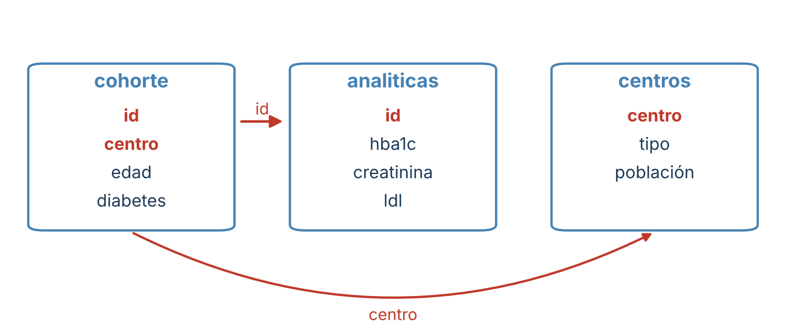
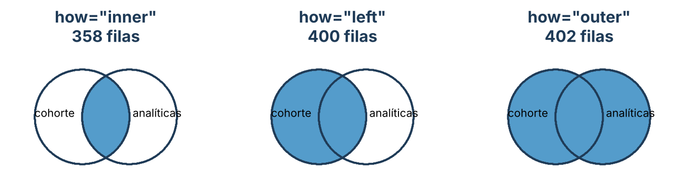
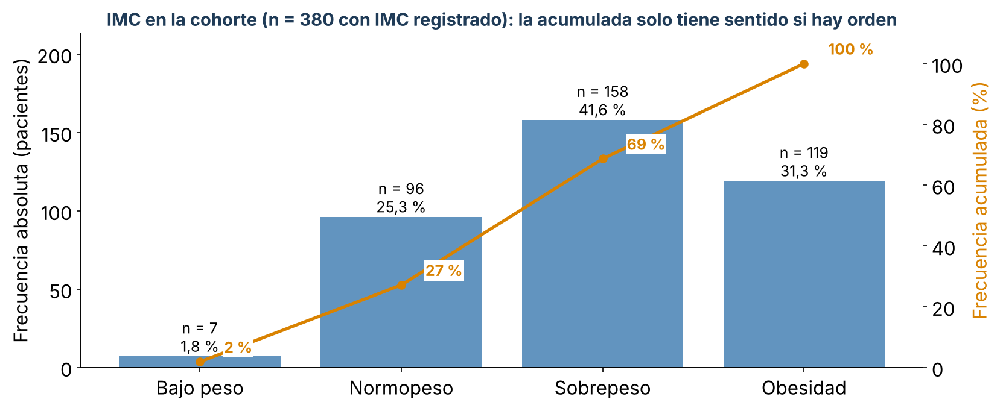
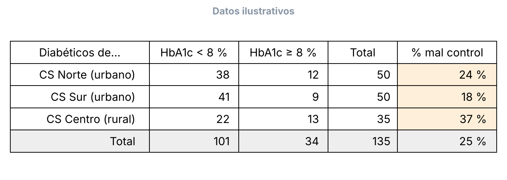
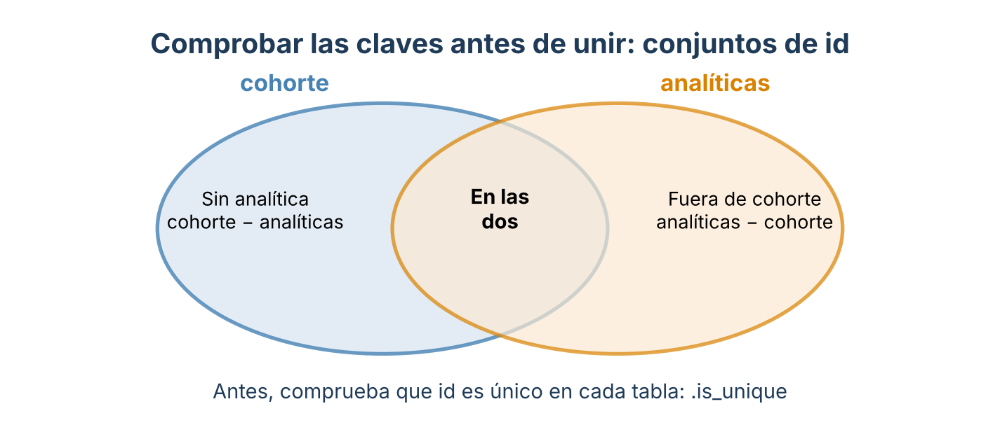

Bioestadística (1964) · Grado en Medicina · Curso 2027-2028
Tema 110Integración de fuentes de datos clínicos y elaboración de tablas de frecuencias
Módulo 3. Procesado inicial de datos
Fernando Borrás Rocher · Universidad Miguel Hernández de Elche · CC BY 4.0
Objetivos de aprendizaje
Al terminar esta sesión serás capaz de:
- Unir tablas de distintas fuentes por un identificador común y comprobar el resultado de la unión.
- Elegir el tipo de unión adecuado (interna, por la izquierda o completa) según la pregunta clínica.
- Resumir datos por grupos con
groupby. - Construir tablas de frecuencias absolutas, relativas y acumuladas.
- Agrupar una variable cuantitativa en categorías clínicas.
- Construir e interpretar tablas de contingencia con porcentajes por filas o por columnas.
Cómo usar esta presentación
Usa el selector de arriba para dar el tema en una sesión completa o en dos sesiones intercaladas.
🎓 Sesión de clase magistral
- 1. Caso clínico de partida 5 min
- 2. Conceptos clave 10 min
- 5. Autoevaluación 5 min
Explica los conceptos, haz la pausa activa y cierra con las ideas clave.
💻 Sesión de Colab
- 3. Demostración: unir y contar 20 min
- 4. Práctica en la app Bioestadística 10 min
- 5. Autoevaluación 5 min
Cada estudiante abre su copia del cuaderno, predice el resultado y después ejecuta la celda.
Teclas: ← → para pasar · N notas del profesor · M cambiar de modo · F pantalla completa · Esc índice.
1. Caso clínico de partida
La información está repartida en tres tablas

- La cohorte, las analíticas y los centros se relacionan por una clave: id o centro.
- Antes de unir hay que comprobar las claves: ¿hay pacientes sin analítica? ¿analíticas sin paciente?
2. Conceptos clave
2.1 Unir tablas
Tres formas de unir dos tablas

- inner: solo los que están en las dos. left: todos los de la izquierda. outer: todos.
- La unión elegida cambia el número de pacientes, y con él los denominadores.
Pregunta para la clase: Si queréis el porcentaje de diabéticos con HbA1c ≥ 8 %, ¿qué unión usaríais?
2. Conceptos clave
2.2 Frecuencias

| Frecuencia | Definición | Ejemplo con 400 pacientes |
|---|---|---|
| Absoluta (n) | Número de casos en cada categoría | 74 diabéticos |
| Relativa (f) | Proporción: n / total | 74 / 400 = 0,185 |
| Porcentual | Relativa × 100 | 18,5 % |
| Acumulada | Suma de las anteriores en variables ordinales | Pacientes con IMC hasta «sobrepeso» |
Las frecuencias acumuladas solo tienen sentido si las categorías tienen un orden.
2. Conceptos clave
2.3 Tablas de contingencia
Tabla de contingencia: dos variables cualitativas

- Cruza dos variables y cuenta los pacientes de cada combinación.
- Los porcentajes por fila responden a «¿qué proporción de cada centro…?».
Pausa activa
Piensa 30 segundos, comenta con quien tienes al lado y vota.
Una cohorte tiene 400 pacientes y la tabla de analíticas, 360 de ellos más 2 que no están en la cohorte. ¿Cuántas filas da merge(cohorte, analiticas, on="id", how="left")?
En la sesión de Colab
Lo que acabas de ver se comprueba con datos en el cuaderno del Tema 110.
- Abre el cuaderno y guarda tu copia: Archivo → Guardar una copia en Drive.
- Ejecuta la celda de configuración.
- Ve a la demostración y predice cada resultado antes de ejecutar.
3. Demostración: unir y contar
3.1 Cargar las tres fuentes
▶ En tu cuaderno: 3.1 Cargar las tres fuentes. Antes de ejecutar, escribe qué esperas obtener.
import pandas as pd
DATOS = "https://raw.githubusercontent.com/fborrasumh/bioestadistica/main/datos/"
cohorte = pd.read_csv(DATOS + "cohorte_limpia.csv")
analiticas = pd.read_csv(DATOS + "analiticas.csv")
centros = pd.read_csv(DATOS + "centros.csv")
print("Cohorte:", cohorte.shape, "· Analíticas:", analiticas.shape, "· Centros:", centros.shape)
analiticas.head()3. Demostración: unir y contar
3.2 Comprobar las claves antes de unir
▶ En tu cuaderno: 3.2 Comprobar las claves antes de unir. Antes de ejecutar, escribe qué esperas obtener.

print("¿id único en la cohorte?", cohorte["id"].is_unique)
print("¿id único en analíticas?", analiticas["id"].is_unique)
sin_analitica = set(cohorte["id"]) - set(analiticas["id"])
fuera_de_cohorte = set(analiticas["id"]) - set(cohorte["id"])
print("Pacientes de la cohorte sin analítica:", len(sin_analitica))
print("Analíticas de pacientes que no están en la cohorte:", sorted(fuera_de_cohorte))Los conjuntos de Python (Tema 20) permiten restar listas de identificadores para encontrar las discrepancias.
3. Demostración: unir y contar
3.3 Tres tipos de unión
▶ En tu cuaderno: 3.3 Tres tipos de unión. Antes de ejecutar, escribe qué esperas obtener.
for tipo in ["inner", "left", "outer"]:
unida = pd.merge(cohorte, analiticas, on="id", how=tipo)
print(f"{tipo:>5}: {len(unida)} filas")innerconserva solo los 360 pacientes que están en ambas tablas.leftconserva los 400 de la cohorte; los 40 sin analítica tendránNaNen HbA1c.outerañade además las 2 analíticas huérfanas: útil para avisar al laboratorio, no para el análisis.
Para el estudio queremos la cohorte completa, así que usamos left. El parámetro indicator=True añade una columna que dice de dónde viene cada fila. validate="one_to_one" detiene la unión si la clave está repetida.
datos = pd.merge(cohorte, analiticas, on="id", how="left", indicator=True, validate="one_to_one")
print(datos["_merge"].value_counts())
datos = datos.drop(columns="_merge")
datos = pd.merge(datos, centros, on="centro", how="left", validate="many_to_one")
print("Filas finales:", len(datos))
datos[["id", "centro", "tipo", "diabetes", "hba1c_pct"]].head()3. Demostración: unir y contar
3.4 Resumir por grupos
▶ En tu cuaderno: 3.4 Resumir por grupos. Antes de ejecutar, escribe qué esperas obtener.
datos.groupby("centro").agg(
pacientes=("id", "count"),
edad_media=("edad", "mean"),
pas_media=("pas_mmHg", "mean"),
eventos=("evento_cv_5a", "sum"),
).round(1)3. Demostración: unir y contar
3.5 Tabla de frecuencias de una variable
▶ En tu cuaderno: 3.5 Tabla de frecuencias de una variable. Antes de ejecutar, escribe qué esperas obtener.
n = datos["diabetes"].value_counts()
f = datos["diabetes"].value_counts(normalize=True)
pd.DataFrame({"n": n, "%": (f * 100).round(1)})3. Demostración: unir y contar
3.6 De cuantitativa a categórica: la HbA1c
▶ En tu cuaderno: 3.6 De cuantitativa a categórica: la HbA1c. Antes de ejecutar, escribe qué esperas obtener.
pd.cut() agrupa una variable cuantitativa en intervalos. Con right=False, cada intervalo incluye su límite inferior y excluye el superior: [7, 8) significa «7 o más y menos de 8».
diabeticos = datos[datos["diabetes"] == "Sí"].copy()
diabeticos["control"] = pd.cut(
diabeticos["hba1c_pct"],
bins=[0, 7, 8, 20],
labels=["< 7 %", "7 a 7,9 %", "≥ 8 %"],
right=False,
)
tabla = diabeticos["control"].value_counts().sort_index().to_frame("n")
tabla["%"] = (tabla["n"] / tabla["n"].sum() * 100).round(1)
tabla["% acumulado"] = tabla["%"].cumsum().round(1)
tablaLos porcentajes se calculan sobre los diabéticos con HbA1c disponible. Siempre hay que indicar el denominador:
print("Diabéticos:", len(diabeticos), "· con HbA1c:", diabeticos["hba1c_pct"].notna().sum())3. Demostración: unir y contar
3.7 Tabla de contingencia
▶ En tu cuaderno: 3.7 Tabla de contingencia. Antes de ejecutar, escribe qué esperas obtener.
pd.crosstab(datos["fumador"], datos["evento_cv_5a"], margins=True, margins_name="Total")Porcentajes por filas: de los fumadores y de los no fumadores, qué porcentaje tuvo un evento cardiovascular en cinco años.
(pd.crosstab(datos["fumador"], datos["evento_cv_5a"], normalize="index") * 100).round(1)Porcentajes por columnas: de los que tuvieron un evento y de los que no, qué porcentaje fumaba.
(pd.crosstab(datos["fumador"], datos["evento_cv_5a"], normalize="columns") * 100).round(1)Las dos tablas son correctas, pero responden a preguntas distintas. Para estudiar si el tabaco se asocia a más eventos, la pregunta natural es la primera. Compara el riesgo de evento entre fumadores y no fumadores. En el Tema 230 la cuantificaremos con el riesgo relativo.
3. Demostración: unir y contar
3.8 La pregunta del caso
▶ En tu cuaderno: 3.8 La pregunta del caso. Antes de ejecutar, escribe qué esperas obtener.
diabeticos["mal_control"] = diabeticos["hba1c_pct"] >= 8
resumen = diabeticos.dropna(subset=["hba1c_pct"]).groupby("tipo")["mal_control"].agg(["sum", "count", "mean"])
resumen.columns = ["mal control (n)", "diabéticos con HbA1c (n)", "proporción"]
resumen["proporción"] = (resumen["proporción"] * 100).round(1).astype(str) + " %"
resumenAmpliación
Ampliación: unir filas de varios centros
Si cada centro enviara su propio fichero con las mismas columnas, se apilarían con pd.concat():
norte = cohorte[cohorte["centro"] == "CS Norte"]
sur = cohorte[cohorte["centro"] == "CS Sur"]
apilado = pd.concat([norte, sur], ignore_index=True)
print(len(norte), "+", len(sur), "=", len(apilado))Ampliación
Ampliación: formato ancho y formato largo
Las mediciones repetidas pueden guardarse en formato ancho (una columna por visita) o en formato largo (una fila por paciente y visita). Muchos análisis y gráficos necesitan el formato largo; melt() y pivot() convierten entre ambos.
ancho = pd.DataFrame({"id": ["CV-0001", "CV-0002"], "pas_basal": [148, 136], "pas_6m": [138, 131], "pas_12m": [132, 128]})
largo = ancho.melt(id_vars="id", var_name="visita", value_name="pas_mmHg")
print(largo)
print(largo.pivot(index="id", columns="visita", values="pas_mmHg"))Ampliación
Ampliación: errores frecuentes
No comprobar el número de filas tras una unión. Una clave repetida multiplica las filas; una clave mal escrita las pierde.
Usar inner sin darse cuenta: es el valor por defecto de merge(). Elimina sin aviso a los pacientes sin datos en la segunda tabla.
Claves con formatos distintos: "CV-0001" y "cv-0001", o el número 1 y el texto "0001", no coinciden.
No indicar el denominador de un porcentaje.
Confundir porcentajes por filas y por columnas.
Calcular frecuencias acumuladas en variables nominales, que no tienen orden.
4. Práctica en la app Bioestadística
Abre la unidad 110 de la app Bioestadística y completa sus misiones:
- Misión básica (sin asistente): predecir el número de filas que dará cada tipo de unión entre dos tablas pequeñas.
- Misión clínica (con pistas): unir la cohorte con las analíticas y construir la tabla de frecuencias del filtrado glomerular por categorías.
- Misión reto (con asistente): construir con el asistente la «Tabla 1» de la cohorte por sexo. Verificar tres de sus cifras a mano.
Al terminar, exporta el informe de la unidad.
5. Autoevaluación
Responde sin asistente y sin ejecutar código.
5. Autoevaluación
Elige una opción: verás la explicación.
Una cohorte tiene 400 pacientes y la tabla de analíticas, 360 de ellos más 2 que no están en la cohorte. ¿Cuántas filas da merge(cohorte, analiticas, on="id", how="left")?
Tras unir dos tablas, el resultado tiene más filas que ambas. ¿Cuál es la causa más probable?
En una tabla de contingencia de tabaco (filas) por evento (columnas), ¿qué porcentaje responde a «de los fumadores, cuántos tuvieron un evento»?
¿En qué variable tiene sentido calcular frecuencias acumuladas?
pd.cut(hba1c, bins=[0, 7, 8, 20], right=False). ¿En qué intervalo queda una HbA1c de 7,0 %?
Ideas clave
- Las tablas se unen por una clave; se comprueba su unicidad antes y el número de filas después.
- El tipo de unión depende de la pregunta:
leftpara conservar toda la cohorte. groupbyresume por grupos;value_countsycrosstabconstruyen tablas de frecuencias y de contingencia.- Todo porcentaje necesita su denominador; por filas y por columnas responden a preguntas distintas.
Glosario
| Término | Definición |
|---|---|
| Clave | Columna que identifica de forma única a cada unidad en una tabla |
| Unión (merge) | Combinación de dos tablas por una clave común |
| Frecuencia absoluta | Número de casos en una categoría |
| Frecuencia relativa | Proporción de casos en una categoría |
| Frecuencia acumulada | Suma de las frecuencias hasta una categoría, en variables ordinales |
| Tabla de contingencia | Tabla que cruza dos variables categóricas |
| Denominador | Total sobre el que se calcula una proporción |
| HbA1c | Hemoglobina glicosilada; refleja el control glucémico de los últimos meses |
Para saber más
- Pandas: unir, combinar y concatenar
- Pandas: agrupar datos con groupby
- American Diabetes Association. Standards of Care in Diabetes. Diabetes Care (edición anual): objetivos de HbA1c. Edición 2026 disponible en: Diabetes Care, suplemento 1.